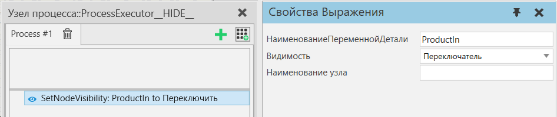

|
Оператор Установить видимость узла позволяет показать или скрыть узел компонента экземпляра продукта. Узел идентифицируется по его имени, определяемому переменной Наименование узла. Если имя узла не задано, отображается или скрывается корневой узел компонента.

Свойства
Название
|
Описание
|
НаименованиеПеременнойДетали
|
Наименование переменной процесса, из которой можно получить экземпляры продукта.
|
Видимость
|
Режим для установки видимости узла. Вы можете выбрать между Тумблер, Видимый или Невидимый.
Переключить - Если узел скрыт, он отображается, и наоборот.
Видимый - Показать узел.
Невидимый - Скрыть узел.
|
Наименование узла
|
Наименование затронутого узла. Оставьте пустым, чтобы изменить корневой узел компонента.
|
|